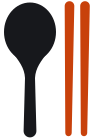
심볼디자인팀 3안이에요. B1 · B2는 지금 수저와 글자 로고(한글 '먹킷' 크게 · MUKKIT 작게)를 다듬은 안이고, B3는 한 걸음 더 나간 안이에요. 실행 애니메이션 칸의 '다시 보기'를 누르면 처음부터 다시 움직여요.
구성과 색은 그대로 두고 끝 모양을 정리했어요. 숟가락 목을 잘록하게, 젓가락은 아래로 가늘게, 앱 아이콘은 반사광 없이 단색 바탕 · 흰 접시 · 그림자 하나로요. 정해 두신 글자 로고 B안 · 아이콘 1안을 지켜요.

심볼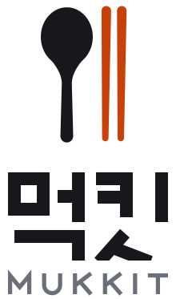
세로형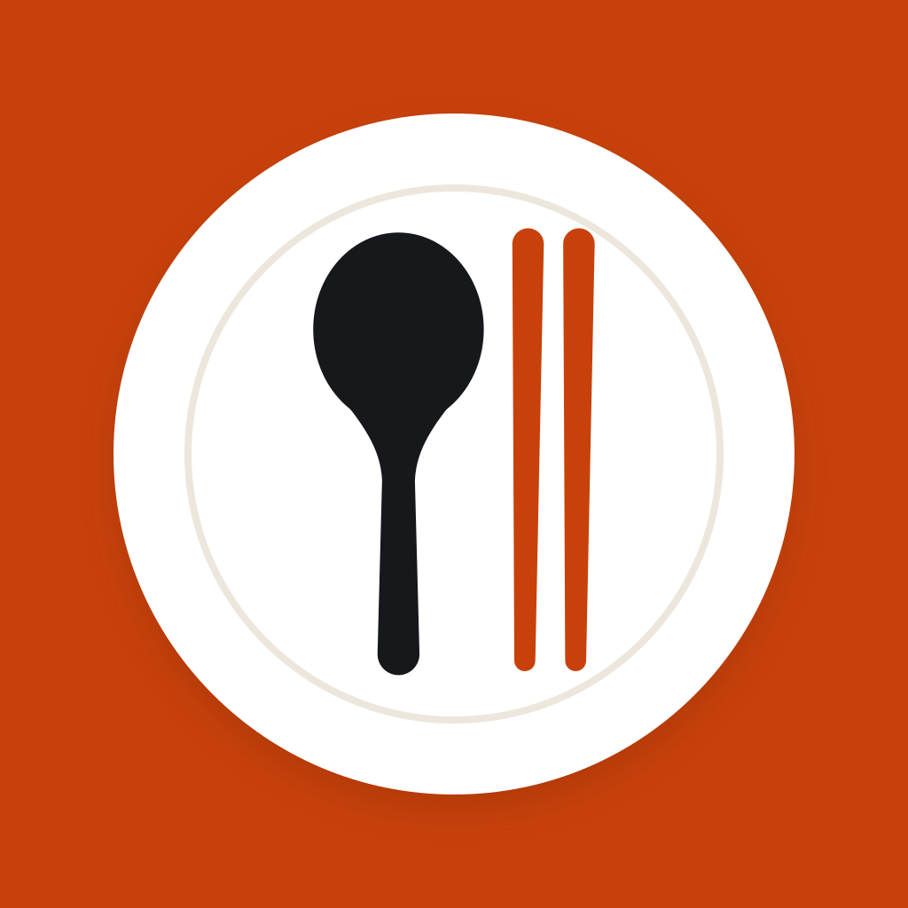
앱 아이콘
'놓기' 0.74초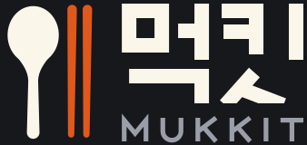
어두운 바탕젓가락이 아래로 살짝 모여 '함께 집는 손'처럼 보여요. 글자는 끝과 꺾임이 둥글어 캐릭터(상구 · 소복이 · 두두)와 말투가 같아요. 접시는 밥 색 크림.
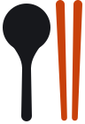
심볼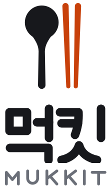
세로형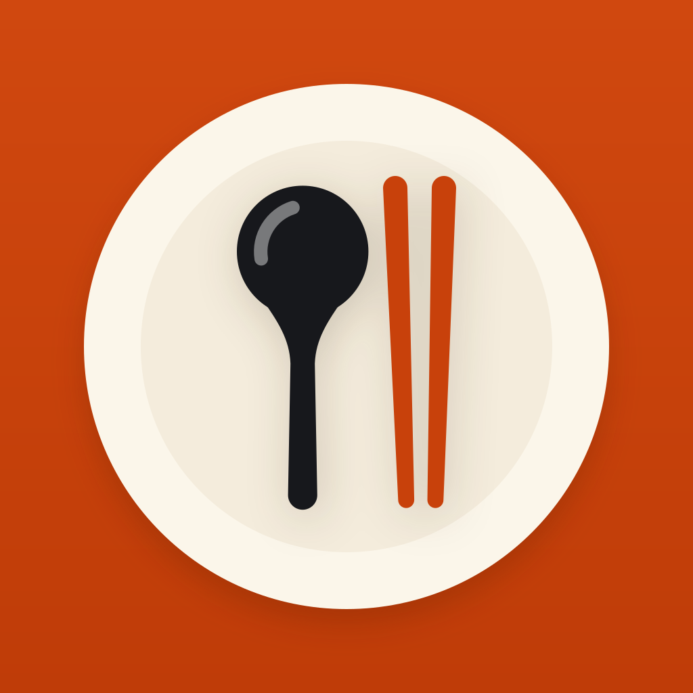
앱 아이콘
'딸깍' 0.74초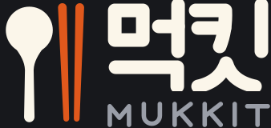
어두운 바탕숟가락 머리에 구멍을 내 지도 핀으로 만들었어요('아는 사람의 맛집 지도'). 다른 배달 · 맛집 앱과 가장 멀지만, 정해 두신 아이콘 1안을 다시 열어야 하고 지도 위 등급 핀과 헷갈릴 수 있어요.
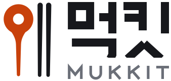
가로형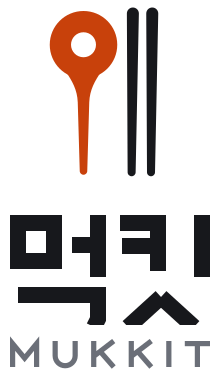
세로형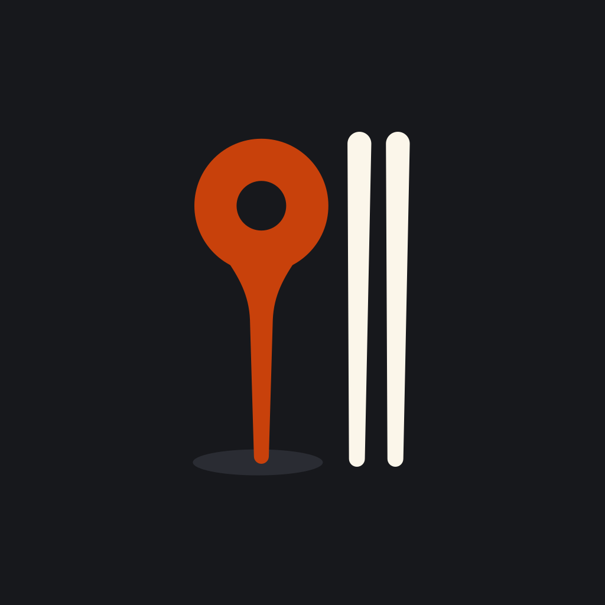
앱 아이콘
'찍기' 0.8초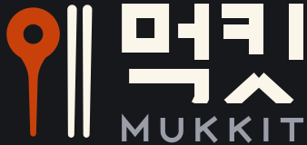
어두운 바탕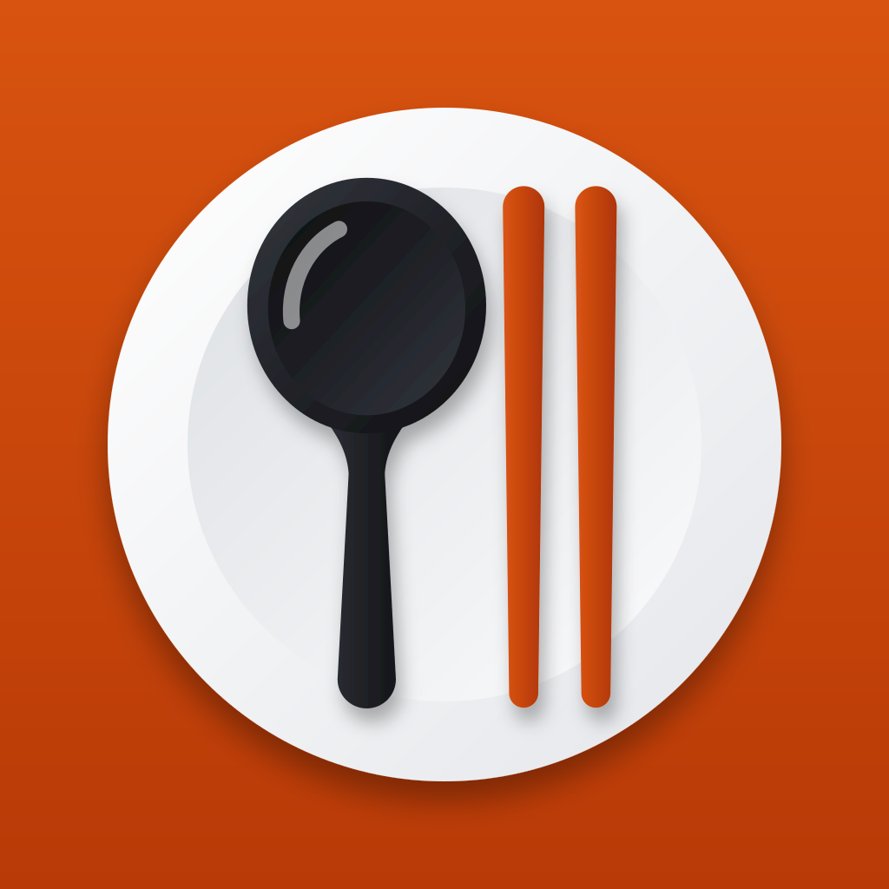
지금 앱 아이콘 · 입체 반사광